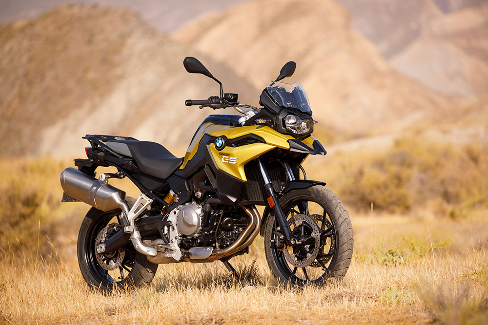
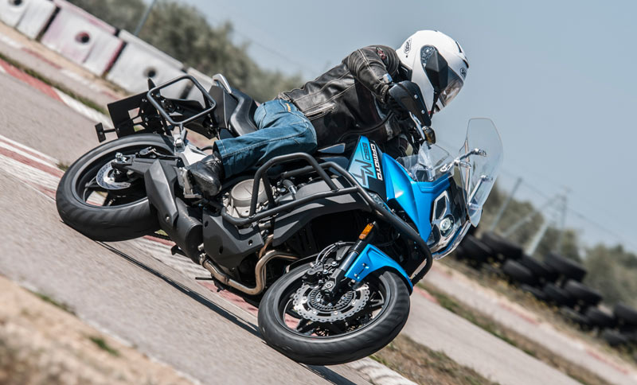

MOTOS DE ALTA GAMA.
BMW F 750 GS
La anterior F 700 GS se veía como la pequeña de la familia, una moto sencilla que resultaba ideal para los viajeros de más corta estatura o para los usuarios más urbanitas. Pero la nueva F 750 GS rompe con todo eso y aunque mantiene una imagen más sencilla que la de la F 850 GS, ha dado un gran paso adelante y se convierte en una gran moto para viajar, sobre todo por asfalto, gracias a su potente motor, fiabilidad y tecnología. Monta el mismo motor que la 850 pero con algunos caballos menos siendo su parte ciclo más eficiente en carretera que la de su hermana mayor, principalmente por el tamaño de su rueda delantera de 19” (21”, en la F 850 GS) y por las suspensiones con menos recorrido y con unas especificaciones más aptas en superficies lisas. Todas estas virtudes se vuelven en su contra pues hay una gran parte de usuarios que lo que buscan es todo lo contrario, una imagen más adventure aunque después apenas toquen las pistas de tierra.
- PRECIO:$39,782,125
- MOTOR:Dos cilindros en linea, 853 c.c
- POTENCIA:77 CV
- PESO:224 KG
- ALTURA ASIENTO:815 mm
- DIMENSIONES RUEDAS:19"/17"
CFMOTO 650MT LIMITED
Como ocurre con todas las motos de la marca asiática, la 650MT Limited ofrece una estética muy moderna y un equipamiento bastante completo a un precio muy ajustado. Es una trail muy orientada al turismo por asfalto, de hecho el recorrido de sus suspensiones, de la marca Kayaba, no es excesivamente largo: 140 mm. De serie incluye elementos tales como las maletas Shad, la pantalla regulable, los cubremanos, la instrumentación digital o los dos modos de conducción. Su motorización es propia, un bicilíndrico de 649,3 cc y 70 CV, más que suficientes para una moto de este perfil.
- PRECIO:$26,775,637
- MOTOR:Dos cilindros en linea, 649 c.c
- POTENCIA:70 CV
- PESO:231 KG
- ALTURA ASIENTO840 mm
- DIMENSIONES RUEDAS17"/17"
DUCATI MULTISTRADA 950/S

Ducati acertó de lleno con la puesta en liza de la hermana pequeña de la Multistrada 1260, de estética similar y con un comportamiento sport propio de la marca italiana. Es una moto cargada de tecnología, sobre todo desde que se ha renovado en profundidad de cara a 2019, que es cuando ha recibido la plataforma inercial de seis ejes, con el ABS en curva de Bosch como elemento primordial. Donde mejor se mueve la MTS 950 es el asfalto, aunque cuenta con un modo motor Enduro que suaviza la respuesta del mismo y desconecta el ABS que permite ciertas licencias en caminos de tierra. Es una pena que Ducati no haya previsto una versión de 95 CV con kit de limitación para el A-2, pues es lo único que se le echa en falta a este modelo. A cambio, Ducati ha lanzado una versión más equipada, la Multistrada 950 S, que destaca por el empleo de suspensiones electrónicas Ducati Skyhook, quickshift, iluminación full-LED, instrumentación con pantalla TFT de 5", smart key... con lo que esta trail se pone a la altura de otras monturas a priori más sofisticadas.
- PRECIO:$59,706,652
- MOTOR:Dos cilindros en L, 937 cc
- POTENCIA:113 CV
- PESO:205,7 KG
- ALTURA ASIENTO:840 mm
- DIMENSIONES RUEDAS17"